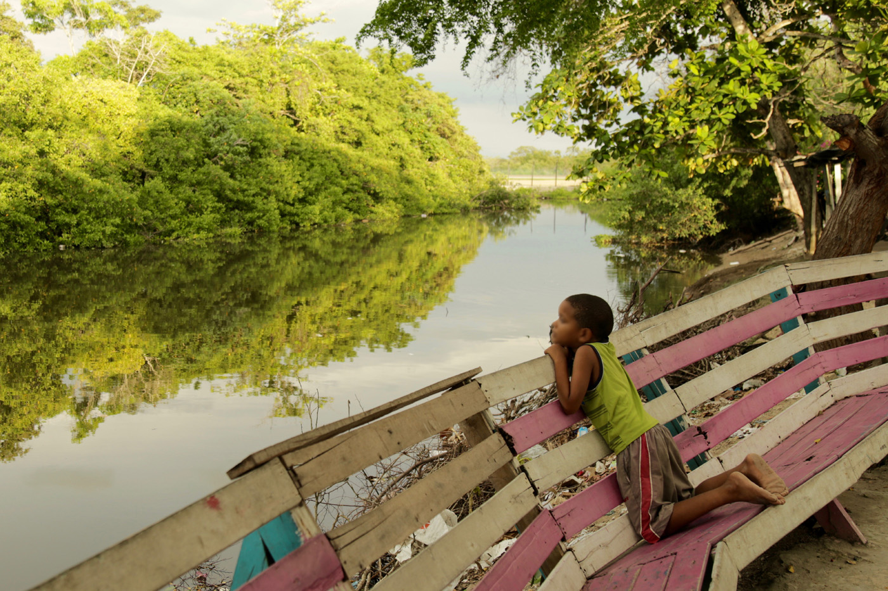
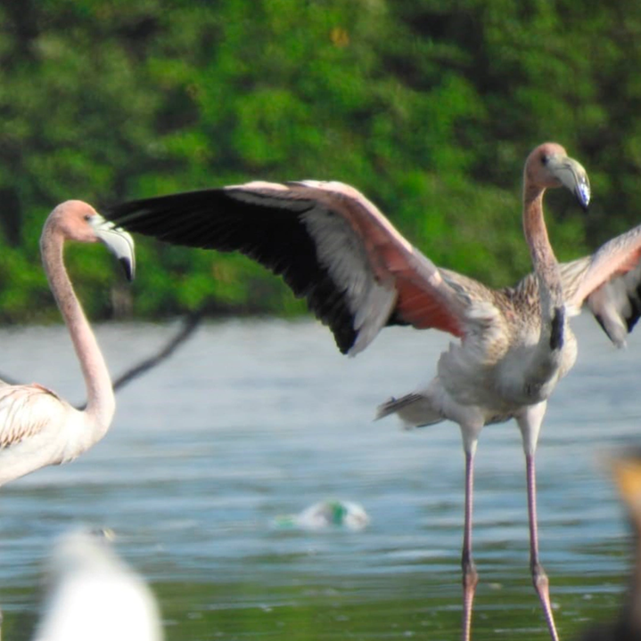

01
El Manglar
¿Que es?
Los manglares son ecosistemas de pantano, dominados por árboles leñosos llamados mangles que se ubican en litorales tropicales de suelo plano y fangoso, y aguas tranquilas (estuarios, bahías, ensenadas, lagunas costeras, etc.)

La palabra mangle procede de los indígenas guaraní y significa “árbol retorcido” (CONAFOR, 2009), se refiere principalmente a la especie Rizópoda mangle que tiene raíces en forma de zancos que se sumergen en el agua y que asociados a ellos tienen gran diversidad de fauna y flora.
Los mangles pueden vivir en el agua y en la tierra (anfibias) y tienen adaptaciones en sus raíces, hojas y tronco, con los que pueden crecer en terrenos inestables, sin oxígeno e inundados con agua de mar (Sánchez et al., 2000). Las raíces de los mangles son muy importantes, le permiten a la planta captar el oxígeno y tienen estructuras especiales en los tallos y hojas que les ayudan a expulsar el exceso de sal que absorben desde la raíz.
02
Su Importancia
Guardianes de la Biodiversidad
Los manglares son muy importantes ya que brindan una amplia gama de servicios y bienes ambientales, además, funcionan como refugio para diversas especies, tanto vertebradas como invertebradas, al proporcionar zonas de reproducción, alimentación y anidación. También sirve como una fuerte barrera capaces de disminuir las inundaciones Igualmente protege la costa del constante golpe de las olas y de desastres naturales como tsunamis, tormentas y huracanes. Son sitios turísticos que la gente desea visitar, pueden albergar especies en vía de extinción y especies que tienen un alto valor comercial.

03
Fauna
Especies que depende de ellos
Los manglares son uno de los ecosistemas más importantes y diversos de Colombia, albergando una gran cantidad de especies animales y vegetales que han evolucionado para adaptarse a un ambiente único y desafiante. Enfocándonos en la fauna que habita en los manglares encontramos desde los animales más pequeños y esquivos hasta los más grandes y emblemáticos, por ejemplo.

Reptiles
Entre los reptiles, uno de los más característicos de los manglares colombianos es el cocodrilo de pantano una especie grande y peligrosa que puede alcanzar los 6 metros de longitud. También se pueden encontrar diversas especies de tortugas, como la tortuga caguama y la tortuga verde ambas en peligro de extinción
Entre los reptiles, uno de los más característicos de los manglares colombianos es el cocodrilo de pantano una especie grande y peligrosa que puede alcanzar los 6 metros de longitud. También se pueden encontrar diversas especies de tortugas, como la tortuga caguama y la tortuga verde ambas en peligro de extinción
Aves
Los manglares son un paraíso para las aves acuáticas, y donde se pueden encontrar más de 250 especies diferentes que habitan en estos bosques. Entre las más comunes se encuentra la garza blanca, el pelícano marrón y la espátula rosada También se pueden observar aves migratorias que llegan desde el hemisferio norte en busca de alimento y refugio
Los manglares son un paraíso para las aves acuáticas, y donde se pueden encontrar más de 250 especies diferentes que habitan en estos bosques. Entre las más comunes se encuentra la garza blanca, el pelícano marrón y la espátula rosada También se pueden observar aves migratorias que llegan desde el hemisferio norte en busca de alimento y refugio
Peces
La fauna de los manglares es muy rica en peces, y muchas especies se han adaptado a las condiciones de agua salada y baja oxigenación. Algunos de los peces más comunes son el robalo, el pargo y la mojarra También se pueden encontrar especies que se han adaptado para sobrevivir en los manglares, como el pez sapo y el pez cocodrilo
La fauna de los manglares es muy rica en peces, y muchas especies se han adaptado a las condiciones de agua salada y baja oxigenación. Algunos de los peces más comunes son el robalo, el pargo y la mojarra También se pueden encontrar especies que se han adaptado para sobrevivir en los manglares, como el pez sapo y el pez cocodrilo
04
Analisis de datos
tablas
Analisis exploratorio de datos de los manglares en cartagena
Analisis exploratorio de datos de los manglares en cartagena